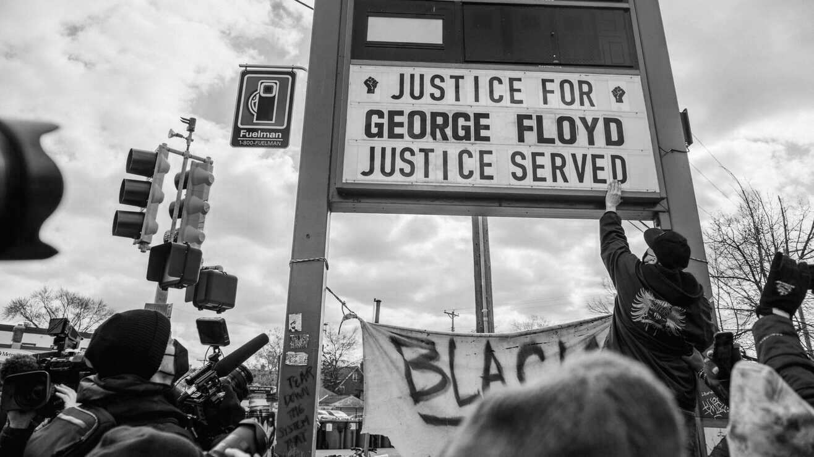

In January 2021, the Black Lives Matter movement was nominated for the Nobel Peace Prize by Norwegian MP Petter Eide. His written nomination noted that, “awarding the peace prize to Black Lives Matter, as the strongest global force against racial injustice, will send a powerful message that peace is founded on equality, solidarity and human rights, and that all countries must respect those basic principles.” On April 20th 2021, former police officer Derek Chauvin was found guilty on all three counts relating to his killing of George Floyd – second- and third-degree murder, and manslaughter.